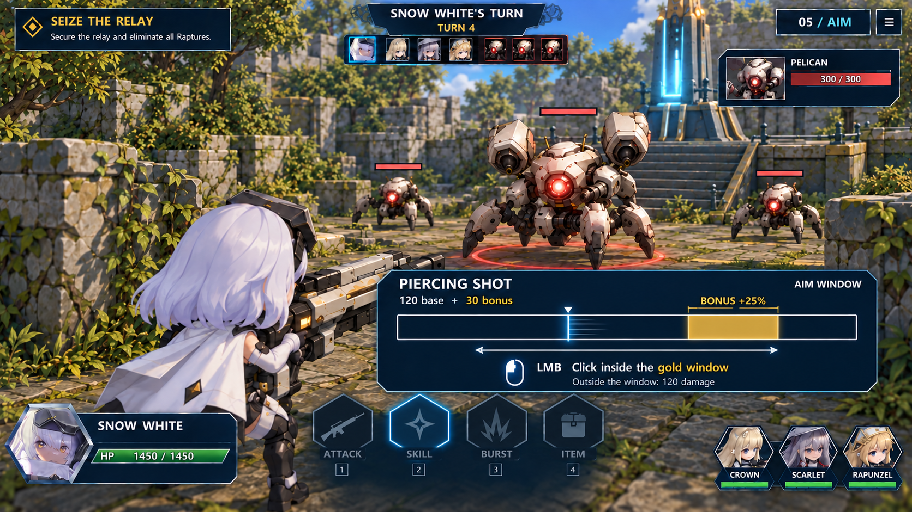
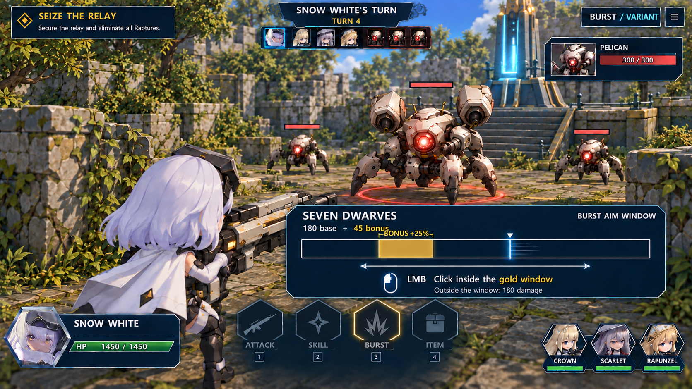

Position stays meaningful
Use the same battlefield and actual unit positions through the camera change. Range, cover and line of sight come from the grid.
Move and select a target on the grid. Shift behind the acting character to choose Attack, Skill, Burst or Item. For an offensive action, stop the moving line inside its highlighted aim window to add bonus damage.

The white line travels back and forth. Click while it is inside the gold section for the bonus.
Select a step or use the arrow keys to browse. Click the image to open it at full size. These are imagegen mockups; the timing bar in these images is static.
A wider window toward the right. 120 base damage; 150 with successful timing.

A narrower window toward the left. 180 base damage; 225 with successful timing. An alternative example to the skill sequence.
Use the same battlefield and actual unit positions through the camera change. Range, cover and line of sight come from the grid.
For this proposal, clicking outside the window still deals base damage. The bonus is a reward for a well-timed click. Values are illustrative.
A short camera move, one click and a modest attack effect, then return to the grid for the next character. No reactive dodging or parrying.